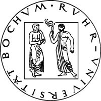

Partner im ArcheoInf-Konsortium

Georg-August-Universität Göttingen
- Prof. Dr. Johannes Bergemann (JBergem@uni-goettingen.de)
Telefon 05 51 / 39 – 75 01 - Dr. Matthias Lang (Matthias.Lang@phil.uni-goettingen.de)
Telefon 05 51 / 39 – 75 06 - Geoff Carver (gjcarver@t-online.de)
Telefon 05 51 / 39 – 75 02 - Hendrik Jostes
Ruhr-Universität Bochum
- Dr. Erdmute Lapp (erda.lapp@rub.de)
Telefon 02 34 / 32 – 2 23 50 - Silvia van Beek (silvia.vanbeek@rub.de)
Telefon 02 34 / 32 – 2 22 58 - Dr. Karolin Bubke (karolin.bubke@rub.de)
Telefon 02 34 / 32 – 2 29 98 - Maike Lins (maike.lins@web.de)
- Christoph Reuter (christoph.reuter@rub.de)
Telefon 02 34 / 32 – 2 23 57
Technische Universität Dortmund
- Norbert Gövert (norbert.goevert@tu-dortmund.de)
Telefon 02 31 / 7 55 – 40 51 - Hans-Georg Becker (hans-georg.becker@tu-dortmund.de)
Telefon 02 31 / 7 55 – 40 36
Technische Universität Dortmund
- Prof. Dr. Ernst-Erich Doberkat
Telefon 02 31 / 7 55 – 27 80 - Pascal Hof
Telefon 02 31 / 7 55 – 48 95 - Ingrid Beckmann
Telefon 02 31 / 7 55 – 47 48
Hochschule Bochum
- Prof. Dr. Franz Josef Lohmar (franz.lohmar@hs-bochum.de)
Telefon 02 34 / 32 – 1 05 19 - Prof. Dr. Alfred Mischke (alfred.mischke@hs-bochum.de)
Telefon 02 34 / 32 – 1 05 14 - Stefan Printz (stefan.printz@hs-bochum.de)
Telefon 02 34 / 32 – 1 05 28